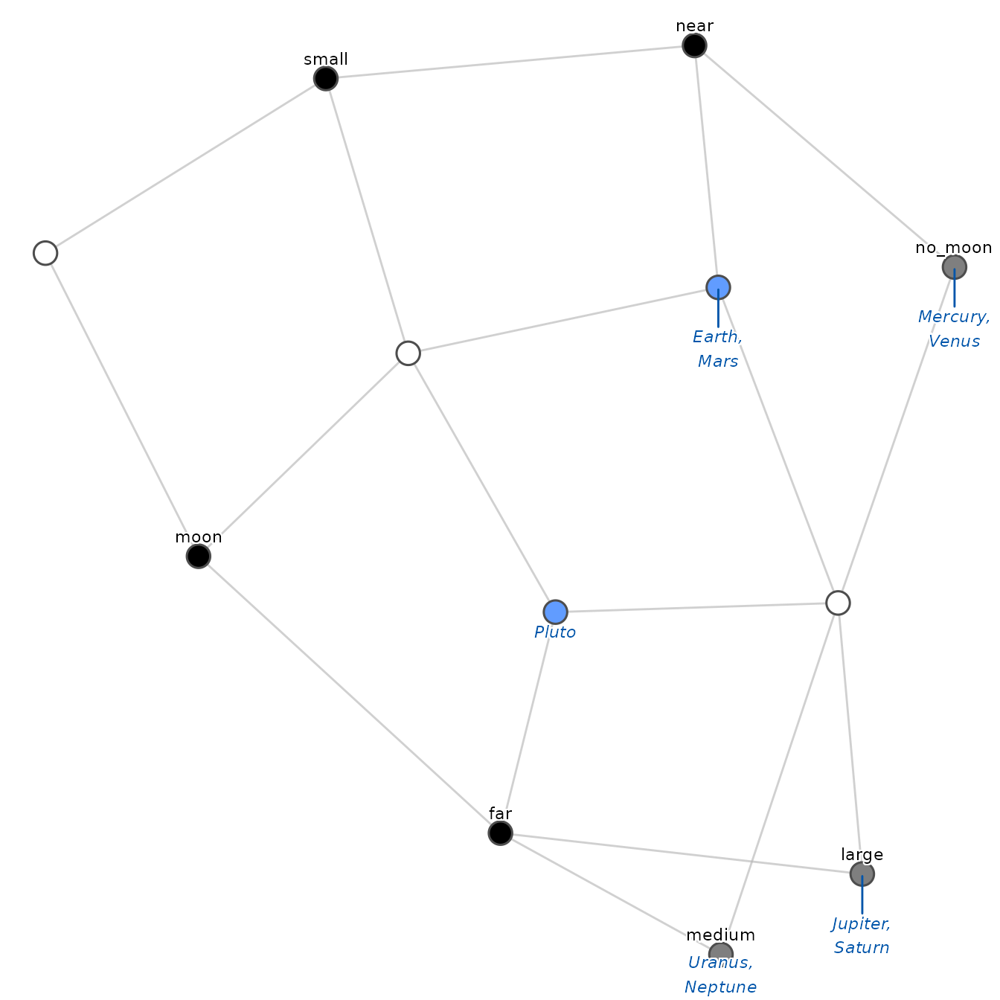
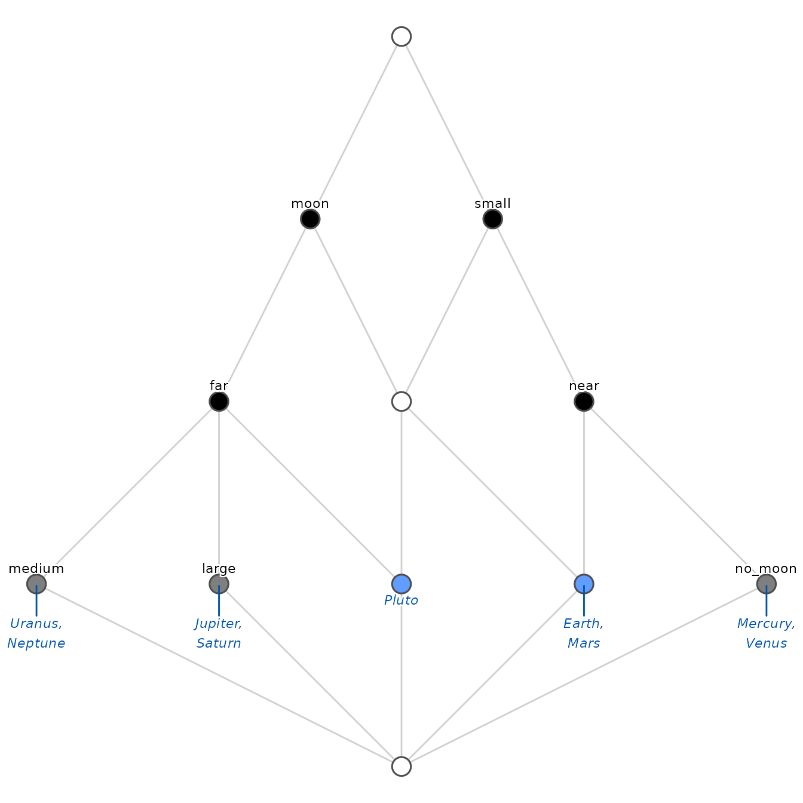

Visualizing concept lattices: from R to LaTeX
Source:vignettes/lattice_visualization.Rmd
lattice_visualization.RmdVisualization is a fundamental component of Formal Concept Analysis (FCA). The lattice structure reveals hierarchical relationships and implications between data that are difficult to detect in a flat table.
fcaR provides a flexible plotting system based on
ggplot2 and ggraph, as well as a powerful tool
for exporting to LaTeX (TikZ) to generate high-quality
figures ready for academic publication.
In this guide, we will use the classic planets dataset
included in the package.
# Load the context and find concepts
fc <- FormalContext$new(planets)
fc$find_concepts()1. Standard visualization
The simplest way to visualize the lattice is by using the
plot() method on the concepts object.
fc$concepts$plot()By default, fcaR applies a heuristic to decide the best
visualization mode based on the size of the lattice (usually reduced
labeling and hierarchical layout).
Layout algorithms
fcaR implements two main algorithms to position the
nodes (concepts) in space:
1. Sugiyama layout (layered)
This is the default value (method = "sugiyama"). It
arranges concepts in horizontal layers based on their generality (grade)
and minimizes edge crossings. It is ideal for classic Hasse
diagrams.
fc$concepts$plot(method = "sugiyama")2. Force-directed layout (organic)
The force-directed layout (method = "force") simulates a
physical system where nodes repel each other and edges act like springs.
It is useful for very large, dense lattices or when the strict hierarchy
makes the graph too wide.
fc$concepts$plot(method = "force")
2. Labeling modes
Information density is a challenge in lattice visualization.
fcaR offers several modes (mode) to control
what information is shown on the nodes.
Reduced labeling
This is the standard in FCA literature
(mode = "reduced"). To avoid redundancy:
- An attribute is shown only on the highest concept (supremum) that contains it.
- An object is shown only on the lowest concept (infimum) that contains it.
This makes the graph easier to read: a concept possesses all attributes labeled on it and its ancestors (above), and possesses all objects labeled on it and its descendants (below).
The color code helps identify the nature of the node:
- Black: Introduces attributes (Attribute Concept).
- Blue: Introduces objects (Object Concept).
- Gray: Introduces both (Clarified Concept).
- White: Introduces nothing new (it is just an intersection of other concepts).
fc$concepts$plot(mode = "reduced")
3. Exporting to LaTeX (TikZ)
For papers and scientific presentations, raster graphics
(PNG, JPEG) often lose quality. fcaR allows exporting the
calculated layout directly to TikZ code (vector
graphics), which can be pasted into a LaTeX document.
To generate the code, use the argument to_latex = TRUE.
This does not draw the plot in R, but returns a special
object with the source code.
# Generate TikZ code
tikz_code <- fc$concepts$plot(to_latex = TRUE)
# The object prints cleanly to the console
tikz_code
#> [1] "%%% Concept Lattice generated by fcaR %%%\n\\definecolor{col619CFF}{HTML}{619CFF}\n\\begin{tikzpicture}[\n node_style/.style={circle, draw=gray!80, line width=0.5pt, inner sep=2.5pt},\n edge_style/.style={draw=gray!60, line width=0.8pt}\n]\n \\draw[edge_style] (6.00, 7.20) -- (4.80, 9.60);\n \\draw[edge_style] (3.60, 7.20) -- (4.80, 9.60);\n \\draw[edge_style] (4.80, 0.00) -- (0.00, 2.40);\n \\draw[edge_style] (4.80, 0.00) -- (2.40, 2.40);\n \\draw[edge_style] (4.80, 0.00) -- (9.60, 2.40);\n \\draw[edge_style] (9.60, 2.40) -- (7.20, 4.80);\n \\draw[edge_style] (7.20, 2.40) -- (7.20, 4.80);\n \\draw[edge_style] (4.80, 0.00) -- (7.20, 2.40);\n \\draw[edge_style] (7.20, 4.80) -- (6.00, 7.20);\n \\draw[edge_style] (4.80, 4.80) -- (6.00, 7.20);\n \\draw[edge_style] (4.80, 0.00) -- (4.80, 2.40);\n \\draw[edge_style] (7.20, 2.40) -- (4.80, 4.80);\n \\draw[edge_style] (4.80, 2.40) -- (4.80, 4.80);\n \\draw[edge_style] (0.00, 2.40) -- (2.40, 4.80);\n \\draw[edge_style] (2.40, 2.40) -- (2.40, 4.80);\n \\draw[edge_style] (4.80, 2.40) -- (2.40, 4.80);\n \\draw[edge_style] (4.80, 4.80) -- (3.60, 7.20);\n \\draw[edge_style] (2.40, 4.80) -- (3.60, 7.20);\n \\node[node_style, fill=white] at (4.80, 0.00) {};\n \\node[node_style, fill=white] at (4.80, 9.60) {};\n \\node[node_style, fill=gray!50, label={[align=center, font=\\sffamily\\tiny, yshift=2pt]90:{medium}}, label={[align=center, font=\\itshape\\tiny, text=blue!80!black, yshift=-2pt]270:{Uranus,\\\\Neptune}}] at (0.00, 2.40) {};\n \\node[node_style, fill=gray!50, label={[align=center, font=\\sffamily\\tiny, yshift=2pt]90:{large}}, label={[align=center, font=\\itshape\\tiny, text=blue!80!black, yshift=-2pt]270:{Jupiter,\\\\Saturn}}] at (2.40, 2.40) {};\n \\node[node_style, fill=gray!50, label={[align=center, font=\\sffamily\\tiny, yshift=2pt]90:{no\\_moon}}, label={[align=center, font=\\itshape\\tiny, text=blue!80!black, yshift=-2pt]270:{Mercury,\\\\Venus}}] at (9.60, 2.40) {};\n \\node[node_style, fill=black, label={[align=center, font=\\sffamily\\tiny, yshift=2pt]90:{near}}] at (7.20, 4.80) {};\n \\node[node_style, fill=col619CFF, label={[align=center, font=\\itshape\\tiny, text=blue!80!black, yshift=-2pt]270:{Earth,\\\\Mars}}] at (7.20, 2.40) {};\n \\node[node_style, fill=black, label={[align=center, font=\\sffamily\\tiny, yshift=2pt]90:{small}}] at (6.00, 7.20) {};\n \\node[node_style, fill=col619CFF, label={[align=center, font=\\itshape\\tiny, text=blue!80!black, yshift=-2pt]270:{Pluto}}] at (4.80, 2.40) {};\n \\node[node_style, fill=white] at (4.80, 4.80) {};\n \\node[node_style, fill=black, label={[align=center, font=\\sffamily\\tiny, yshift=2pt]90:{far}}] at (2.40, 4.80) {};\n \\node[node_style, fill=black, label={[align=center, font=\\sffamily\\tiny, yshift=2pt]90:{moon}}] at (3.60, 7.20) {};\n\\end{tikzpicture}"
#> attr(,"class")
#> [1] "tikz_code"Saving to a file
You can save the code directly to a .tex file using the
save_tikz() function and the R pipe operator:
# Save to a local file
fc$concepts$plot(to_latex = TRUE) |>
save_tikz("lattice_diagram.tex")How to use it in LaTeX
To compile the generated code, ensure you include the following packages in your LaTeX document preamble:
\documentclass{article}
\usepackage{tikz}
\usetikzlibrary{shapes, arrows, positioning}
\begin{document}
\begin{figure}[h]
\centering
% You can use \input{lattice_diagram.tex} here
% or paste the generated code directly:
\begin{tikzpicture}... \end{tikzpicture}
\caption{Concept lattice generated with fcaR.}
\end{figure}
\end{document}